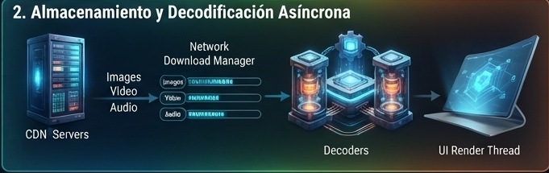

4. Uso de Recursos Multimedia
Definición
Los recursos multimedia engloban todos los elementos de contenido no textual integrados en una aplicación móvil, tales como gráficos, flujos de audio, secuencias de video y animaciones, diseñados para enriquecer la experiencia de usuario (UX).
Tipos de Recursos Multimedia Aplicables a Programación Móvil
- Imágenes: Formatos rasterizados (PNG, JPEG, WebP) y vectoriales (SVG / Vector Drawables) para iconos, fondos y elementos de interfaz.
- Audio: Archivos comprimidos o sin pérdida (MP3, AAC, WAV) para efectos de sonido (SFX) y reproducción de música o podcasts.
- Video: Contenedores multimedia (MP4, MKV, H.264) para tutoriales, reproducción en streaming y cinemáticas.
- Animaciones y Elementos Visuales Dinámicos: Animaciones basadas en fotogramas, vectores animados (Lottie files) y transiciones fluidas de interfaz.
Elementos de la Estructura de Proyectos donde se Almacenan
En proyectos nativos (Android/iOS), los recursos se ubican en carpetas especializadas como res/drawable, res/mipmap y res/raw (en Android) o en el directorio Assets.xcassets (en iOS), permitiendo el empaquetado optimizado según la densidad de pantalla (mdpi, xhdpi, xxhdpi) y localización.
Componentes de Software en el Uso de Recursos Multimedia
Se emplean clases especializadas del framework como MediaPlayer, ExoPlayer (reproducción avanzada de video/audio), y librerías de carga de imágenes asíncronas como Glide, Picasso o Coil para evitar bloqueos en el hilo principal (UI Thread) y prevenir fugas de memoria (OutOfMemoryError).
